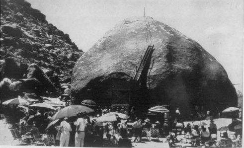

13ème "Convention Annuelle des Vaisseaux Spatiaux" ce mois-là à
Giant Rock (Californie)

A
Giant Rock (Californie), la 13ème Convention Annuelle des Vaisseaux
Spatiaux réunit 5000 personnes.
05 Observation à Osceola (Wisconsin)Cas Blue Book n° 10996 non résolu.
10 Intervention de James
E. McDonald pour une étude objective et publique des ovnis.
Suite à différentes pressions (l'opinion, Gerald Rudolf Ford, Josef Allen Hynek, Coleman VonKeviczky, McDonald) le projet Blue Book est examiné par un comité
de scientifiques qui propose de confier le travail d'une étude
scientifique approfondie des ovnis à une université américaine
dont l'impartialité ne pourrait être mise en cause. Le Congrès
approuve le projet et confie cette tâche à la Commission
Condon, au sein de l'université du Colorado.
Le Hérisson du 20, titrant sur la création du projet Colorado : Les U.S.A. décident : 300 000 $ pour élucider le mystère des soucoupes volantes. En encart, le loufoque cotoie le sérieux : La princesse Negonnah et le prince Nœsam délégués de la planète Tythan au congrès des engins inconnus.
26
Lancement du 1er satellite Intelsat 2.
Observation à Cold Bay AFS (Alaska)Cas Blue Book n° 11092 non résolu.
27 Récupération d'un corps suite à
un crash dans le nord-ouest de l'Arizona.